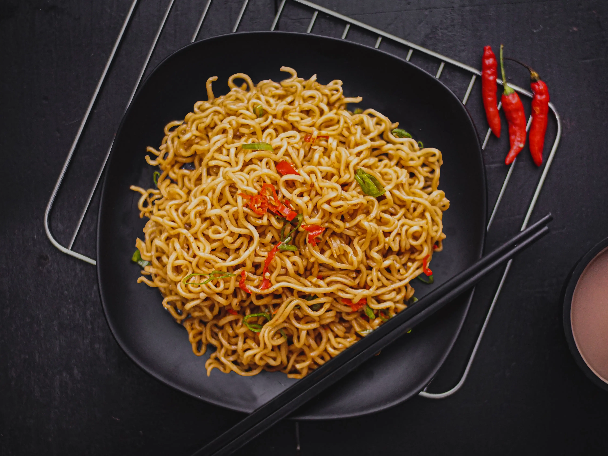

About
Warung Lincak Mbah Rono adalah warung makan dengan harga murah yang dapat ditemukan di belakang Terminal Jombor. Warung Lincak Mbah Rono memiliki tempat yang nyaman untuk nongkrong dengan harga yang relatif murah di Yogyakarta. Selain murah dan nyaman, Warung Lincak Mbah Rono juga memiliki menu yang beragam dan rasa masakan yang khas.

Reviews

Joni Purnomo
Emang kenapa kalo saya sering makan disini? Wong saya suka kok.